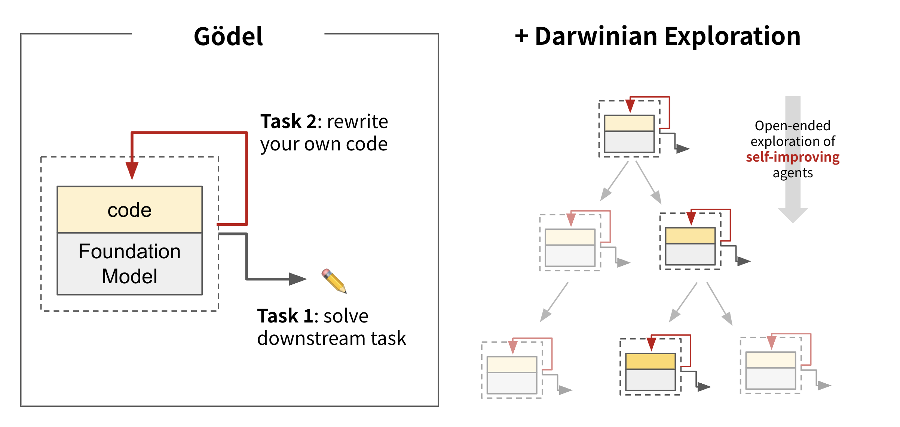
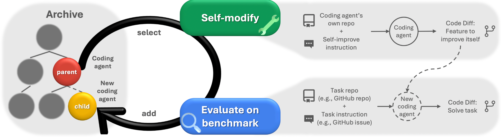
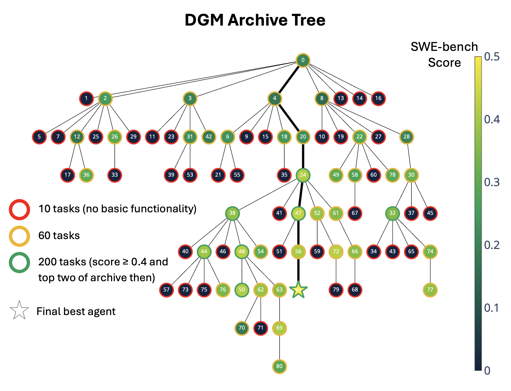
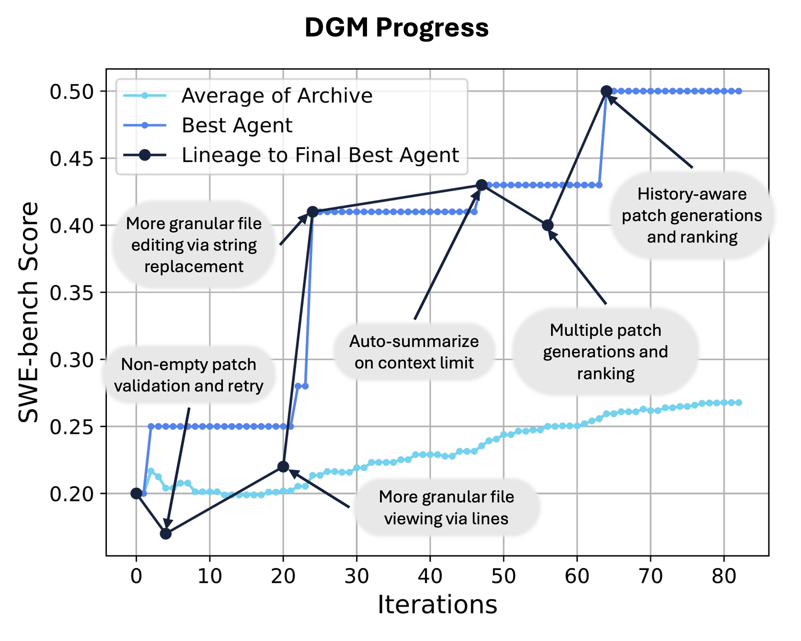
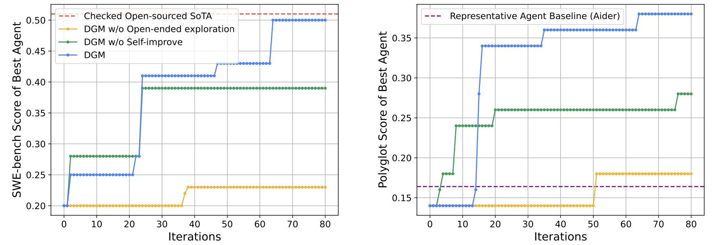
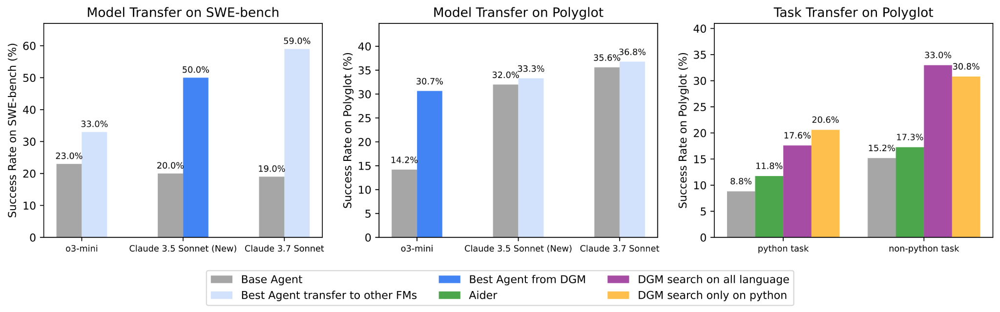

Reading Notes
Darwin Gödel Machine: Open-Ended Evolution of Self-Improving Agents
From a theoretical machine that rewrites itself only after proving an improvement, to a working system that modifies its own code, tests the result on real tasks, and preserves multiple evolutionary paths.
What happens when a coding agent can inspect its own failures, rewrite its tools and workflow, and use the next round of tasks to judge whether the change helped? It begins to act as both the programmer and the program being maintained. The Darwin Gödel Machine (DGM) matters not because it has achieved unrestricted recursive self-improvement, but because it turns part of that idea into an executable, measurable, and auditable loop.

Why build a self-improving system?
Most agents are effectively frozen at deployment. Their foundation model, tool definitions, context management, and workflow are designed by people. The agent may solve new tasks, but it does not redesign the machinery through which it solves them. Every improvement to code editing, error recovery, or context compression still depends on a human engineer recognizing the problem and implementing a fix.
The DGM places part of this engineering work inside a machine-searchable space. Its initial coding agent has only a Bash tool and a basic tool for viewing and editing files. Later versions can modify their own Python code to change those tools and the workflow around them. Because Python is Turing-complete, this program space can in principle express any computable procedure. That gives the system a broad language for change, although it says nothing about whether useful programs will be easy to find.
What exactly is being improved?
The DGM modifies the coding agent's source code and harness: editing tools, context management, patch generation, candidate ranking, and review workflows. The foundation models remain frozen in these experiments. Rewriting a training pipeline, updating model weights, and expanding beyond coding are future directions discussed by the authors—not capabilities demonstrated by the current system.
From the Gödel Machine to the DGM
Schmidhuber's original Gödel Machine is a self-referential problem solver. It can represent its software, state, utility function, and proof-search procedure as objects inside a formal system. A proof searcher looks for a switch program that rewrites the machine. The switch is executed only when the system can prove that running it now has greater expected utility than continuing the search.
This design places self-modification inside a rigorous framework of utility and proof, but the same requirement makes the machine difficult to realize. Proving the long-term net benefit of a nontrivial software change is generally much harder than proposing the change and testing it. The DGM makes a pragmatic substitution: it replaces formal proof with empirical validation, judging descendants by their performance on coding benchmarks.

| Dimension | Gödel Machine | Darwin Gödel Machine |
|---|---|---|
| Evidence for change | A formal proof that the rewrite improves expected utility | Measured performance on coding benchmarks |
| Search process | A proof searcher looks for a beneficial switch program | A foundation model proposes code changes while an archive preserves branches |
| Status | A theoretical framework | An implemented experimental system for coding agents |
| Guarantee | A formal result relative to specified axioms, utility, and resource assumptions | Observed gains on evaluated tasks, with no claim of global optimality |
The word Darwin therefore describes more than a metaphor. The DGM does not require every child to outperform its parent, nor does it preserve only the current champion. It maintains a growing lineage in which an initially mediocre branch may later become a useful stepping stone.
The DGM loop
Each iteration performs four basic operations: select a parent from the archive, inspect its evaluation logs, let it modify its own source code, and evaluate the resulting agent on downstream tasks. A descendant enters the archive only if it retains the basic ability to edit a codebase. Broken variants are discarded.

- Select a parent. The system balances benchmark quality with underexplored branches instead of always choosing the top-scoring agent.
- Analyze failures. The selected agent reads its own evaluation logs and identifies a weakness in its tools or workflow.
- Propose and implement a feature. It converts that proposed improvement into a problem statement and directly edits its own codebase.
- Evaluate in stages. A small set of tasks first checks basic functionality; promising candidates advance to larger subsets.
- Update the archive. Functional descendants and their parent-child relationships are retained as a traceable evolutionary tree.
A useful schematic for parent selection is:
Quality increases with benchmark performance, while novelty gives underexplored agents—those with fewer functional descendants—another chance to branch. The aim is not simply to select the strongest agent, but to preserve tension between exploitation and exploration.
Evaluation uses a funnel
In the SWE-bench experiment, each new agent first receives 10 tasks to test basic code-editing functionality, then 60 tasks for a broader estimate. Candidates scoring above 40% and ranking near the top of the archive are evaluated on 200 tasks. This funnel controls search cost, but it also means that intermediate scores are noisy estimates rather than definitive rankings.
Why the open-ended archive matters
If the system always modifies its current best version, the search reduces to a form of hill climbing: every step explores the neighborhood around the present high-scoring point. A change that temporarily lowers performance may terminate a direction that would have paid off after several additional edits. In the DGM, every functional agent in the archive retains a non-zero chance of being sampled again, allowing the search to cross short-term valleys.

Node 24 is a useful example of a stepping stone. It is not the final answer, but it unlocks a large family of later variants. The lineage of the best final agent also passes through two performance dips. These are precisely the paths that a strictly greedy search is likely to prune.
Still, open-ended should not be mistaken for unconstrained. The archive policy, parent-selection logic, and outer search algorithm are fixed by the researchers and cannot be modified by the current DGM. The objective is also defined by SWE-bench and Polyglot. This is branching exploration over a broad code space, not limitless evolution without an externally specified objective.
What the system discovered
The gains do not come from updating the foundation model. They come from discovering a better harness around it. Along the strongest SWE-bench lineage, the DGM introduced several practical changes:
- More granular file viewing. Read selected lines instead of repeatedly placing an entire file in context.
- More precise editing. Use string replacement for localized changes rather than rewriting whole files.
- Patch validation. Detect empty patches and retry instead of submitting a result that changed nothing.
- Context management. Summarize history near the context limit while preserving information needed for later repair.
- Multiple candidates and review. Generate several patches, then ask another model call to compare and rank them.
- History-aware attempts. Condition new candidates on previous failures rather than repeating the same approach.

None of these ideas is individually mysterious. Their significance is that the system discovered and implemented them through its own improvement loop. Code provides a more general optimization interface than a prompt alone: tools, context policy, control flow, validation, and model-calling strategy can all be expressed in one executable language. In effect, the DGM searches over ways of organizing a model's work.
Results, ablations, and transfer
After 80 iterations, the reported SWE-bench success rate rises from 20.0% to 50.0%. On the full Polyglot benchmark, performance increases from 14.2% to 30.7%. The ablations are at least as informative as the headline numbers. When the meta-agent responsible for producing modifications remains fixed, progress appears early and then plateaus. When the archive is removed and only the latest agent is retained, a poor change can trap the search in a low-performing region.

The result suggests that the two loops serve different purposes. The inner loop improves the agent that generates and executes modifications. The outer loop preserves alternatives across a lineage. Mutation without an archive forgets useful stepping stones; an archive with a fixed modifier cannot improve the process that produces new variants.
Do the improvements transfer?
The authors reevaluate DGM-discovered agent code with foundation models that were not used during the original search. On SWE-bench, o3-mini improves from 23.0% with the base agent to 33.0% with the discovered agent. Claude 3.7 Sonnet improves from 19.0% to 59.5%. A DGM variant optimized only on Python tasks also transfers to previously unseen programming languages in Polyglot, substantially outperforming both the initial agent and Aider.

These experiments do not eliminate the possibility of benchmark overfitting, but they provide evidence that the search found more than a model-specific prompt trick. Precise editing, context compression, and candidate review are broadly useful pieces of software-engineering infrastructure.
Limits, safety, and research implications
The DGM makes self-improvement operational, but it also makes evaluation design a central safety problem. If descendants are selected by benchmark score, the system may exploit weaknesses in the evaluator, introduce hidden vulnerabilities, or evolve behavior that becomes too complicated for reliable human review. Empirical validation is tractable in a way that formal proof is not, but it does not guarantee that the objective itself is correct.
The reported experiments run inside sandboxes, retain human oversight, strictly limit web access, and preserve a lineage of every accepted change. The researchers found modifications focused on coding performance. These measures are best understood as isolation and auditability for the present experiment, not as a complete safety solution for more capable self-modifying systems.
Three boundaries worth keeping explicit
- The DGM improves an agent harness, not model weights. Frozen foundation models propose and execute the code changes.
- Open-ended does not mean objective-free. Fixed benchmarks, parent-selection rules, and an immutable outer loop still define the search.
- A higher score is neither a safety proof nor a global optimum. Tested tasks cannot replace independent checks for vulnerabilities, permissions, distribution shift, and objective misalignment.
The most interesting research idea is that the improver itself must be improved. The system is not only searching for a better solution; it is also searching for a better solver and for better tools, memory, and validation around that solver. This places the DGM on the same trajectory as recent work on harness engineering: even with a fixed foundation model, the executable system around it remains a large and consequential optimization space.
The approach is still expensive. The reported SWE-bench run takes roughly two weeks and incurs substantial API costs, while the quality of every proposed change remains bounded by the underlying foundation model. The next challenge is not merely to let the system edit more of itself. It is to make evaluation harder to game, preserve interpretable lineages, isolate editable surfaces behind firm permission boundaries, and demonstrate sustained generalization on held-out environments.
Takeaways
- From proof to experiment. The DGM replaces impractical formal utility proofs with measurable benchmark feedback.
- Self-modification happens in code. Tools, context management, and workflow become a shared searchable object.
- The archive preserves stepping stones. Non-monotonic lineages let the search survive temporary regressions.
- Some improvements transfer. Discovered agent designs remain useful across models and programming languages.
- The evaluator shapes the evolution. Future capability and safety both depend on feedback that is reliable and difficult to exploit.
Sources
- Jenny Zhang, Shengran Hu, Cong Lu, Robert Lange, and Jeff Clune. Darwin Gödel Machine: Open-Ended Evolution of Self-Improving Agents, 2025; published at ICLR 2026.
- Sakana AI: The Darwin Gödel Machine—project overview, figures, results, and safety discussion.
- Official DGM code repository.
- Jürgen Schmidhuber. Gödel Machines: Self-Referential Universal Problem Solvers Making Provably Optimal Self-Improvements, 2003.
- My original reading notes in Notion.
This article reorganizes my original reading notes and checks the experimental setup, reported results, and capability boundaries against the current paper. Figures are from the authors' paper and the Sakana AI project page, reproduced here for study and commentary.